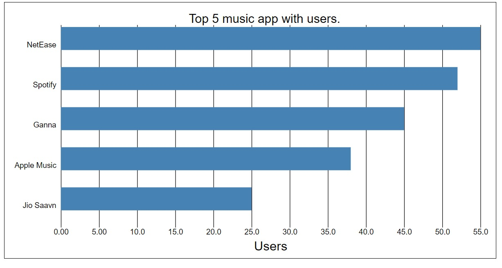

Description:
This is a Bar chart shows that the comparison of different music apps as per their number of users. By labeling we can see that the actual number of user of each app. So we can easily find that which app has most and less number of users.